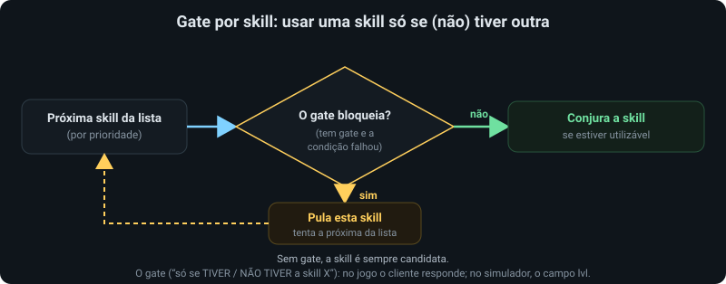
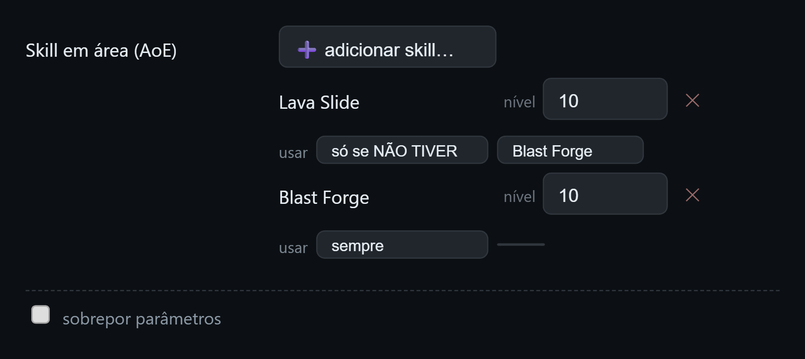

Monstros & skills
Recursos avançados do editor: reagir ao monstro que está sendo o alvo, escolher qual skill cada papel usa por homúnculo, e configurar os combos da Eleanor.
Monstros e grupos
Por padrão a árvore decide só pelo tipo de homúnculo. Quando você precisa de ações diferentes conforme o monstro que está sendo o alvo, há um cadastro de monstros e grupos e um nó que reage a eles. Clique em Monstros na barra de ferramentas do editor para abrir o gerenciador:
- Cadastro de monstros — informe o ID (a classe do monstro no jogo, o
V_TYPE) e uma descrição, e clique em cadastrar. Há uma busca por nome ou ID, e cada monstro pode ser removido. - Grupos — crie um grupo com um nome; selecione-o e marque, na lista, quais monstros cadastrados pertencem a ele. Você pode renomear ou excluir o grupo (excluir limpa as referências nos nós da árvore).
O cadastro é global do projeto: é compartilhado por todas as árvores e fica lembrado no navegador. Na versão estática (navegador), você pode levá-lo de um computador a outro pelos botões ⬇ exportar / ⬆ importar monstros dentro do modal de Monstros (logo abaixo do título). Na versão desktop/web a config já é persistida automaticamente.
O nó monsterCheck
Adicione um nó monsterCheck (tem um único filho). No inspetor você escolhe:
- Monstro alvo — um monstro do cadastro (ou nenhum).
- Grupo — um grupo do cadastro (ou nenhum).
- negar — inverte a condição.
O filho roda quando o monstro alvo é o monstro escolhido ou está no grupo escolhido. Com negar marcado, roda quando não é e não está. Sem alvo atual, o nó sempre falha. Assim você monta, por exemplo, “se o alvo é um chefe, use a skill X” ou “ataque normalmente, exceto contra o grupo Y”.
Ao ▶ Simular, o catálogo é enviado ao simulador automaticamente; lá, defina a classe (ID) de cada monstro no painel do monstro para ver o nó disparar. Ao Gerar Lua, o catálogo vai embutido no pacote — o cliente o carrega sozinho.
O arquivo monsters.lua só entra no pacote quando a árvore usa pelo menos um nó monsterCheck; sem ele, é omitido (não faz falta).
Skills por homúnculo
As ações automáticas (UseMainSkill, UseAoESkill, UseOffensiveBuff, ...) resolvem a skill concreta pelo perfil do tipo de homúnculo. A maioria dos tipos tem uma escolha óbvia por papel — mas alguns Homunculus S têm duas ou mais skills no mesmo papel. Por exemplo, o Dieter pode usar Lava Slide ou Blast Forge como AoE; Pyroclastic ou Tempering como buff ofensivo.
O botão Skills na barra de ferramentas abre a tela onde você monta, por papel (dano alvo único, AoE, buff ofensivo, buff defensivo), quais skills o homúnculo usa e em que nível. Cada papel é um seletor múltiplo: use “➕ adicionar skill” para incluir e o ✕ para remover — pode haver 0, 1 ou várias skills. Abaixo aparece uma linha por skill, com o nome e o nível ao lado; a descrição aparece ao passar o mouse no nome ou no nível. “↺ padrão” volta às skills do perfil; remover todas deixa o papel sem skill (não age). Se o tipo não tem skill para um papel, aparece “não há skill para este papel”.
Como executa: os buffs (ofensivo/defensivo) são mantidos todos — recasta cada um ao expirar (ex.: Bayeri usa Golden Ferse e Angriff Modus). Os ataques (main/AoE) seguem a ordem como prioridade: conjura a primeira utilizável e cai para a seguinte (ex.: Dieter usa Lava Slide e, em recarga, Blast Forge). Com o papel vazio, a ação automática não faz nada.
Cada homúnculo mostra só as próprias skills. A tela lista as skills do tipo selecionado no topo. As skills exclusivas da forma base (Castling do Amistr, Chaotic Blessings do Vanilmirth, cura…) não aparecem em todos os homúnculos: elas se configuram selecionando o homúnculo base no seletor — assim, por exemplo, o Castling só aparece para editar no Amistr.
Condição por skill (possui / não possui)
Cada skill da lista de um papel pode ter uma condição opcional, abaixo do nome: [sempre | só se TIVER | só se NÃO TIVER] e, ao escolher uma das duas últimas, o seletor da skill X que serve de gatilho. Quando a condição falha, a IA pula aquela skill e cai para a próxima da lista de prioridade.
Ex.: deixe o Dieter usar Lava Slide com a condição “só se NÃO TIVER Blast Forge” e a Blast Forge acima dela na prioridade. Enquanto ele não aprendeu a Blast Forge, usa a Lava Slide; ao aprender (prioridade maior), troca sozinho. No jogo, “possui a skill” é resolvido pelo cliente; no simulador, o campo lvl do homúnculo decide o que ele já aprendeu — isso é só do simulador, não vai para a IA gerada. A mesma checagem existe como a condição “Possui a skill” no combobox de condições, para usar direto na árvore (veja a Referência de nós).


Essa escolha é global (vale no jogo, no simulador e no pacote gerado) e fica lembrada no navegador.
Sobrepor parâmetros por homúnculo: abaixo das skills de cada papel há um checkbox “sobrepor parâmetros” (desmarcado por padrão). Os parâmetros das ações (AutoMobCount, HealSelfHP, etc.) vêm do modal Parâmetros (global). Ao marcar, os campos aparecem já com os valores globais e passam a valer só para este homúnculo; editar muda só o dele. Ao desmarcar, o override é descartado e o papel volta a usar o global. Precedência: nó > override do homúnculo > global > Config > padrão.
No pacote gerado, a escolha de skills é auto-descritiva: o skill_choice.lua traz as skills padrão de todos os 9 homúnculos (não só as que você customizou), refletindo exatamente o que esta tela mostra. O pacote também inclui uma pasta source/ com os JSONs-fonte (tree.json e homun_skills.json sempre; monsters.json só quando há nó monsterCheck) para referência e re-importação — o cliente do jogo não os carrega.
Na versão estática (navegador, sem servidor), o modal de Skills traz logo abaixo do título os botões ⬇ exportar e ⬆ importar skills — para salvar a sua configuração num arquivo homun_skills.json e carregá-la depois. (Na versão desktop/web isso não aparece, pois a config já é persistida automaticamente.)
Parâmetros das skills (globais)
O botão Parâmetros (2ª linha da toolbar, ou o link “⚙ Parâmetros desta skill…” no inspetor de uma ação de skill) abre um modal onde você ajusta os parâmetros globais de cada papel (ação): por exemplo, de quantos alvos a AoE precisa (AutoMobCount), nível fixo (AoEFixedLevel), HP% para curar (HealSelfHP/HealOwnerHP), alcance da skill principal (AttackRange), e os liga/desliga (UseAttackSkill, UseHomunSSkillChase, ...).
Cobre 8 papéis: skill em área, skill principal, buff ofensivo, buff defensivo, cura própria, cura do dono, buff no dono e Castling. Cada papel mostra uma descrição da ação e seus knobs. Os campos numéricos trazem o padrão como dica (vazio = usa o padrão); os booleanos são sim/não. Não há mais a opção “herdar” nem dimensão por homúnculo: este modal é a única fonte da verdade e vale para todos os homúnculos que têm a skill do papel. Os papéis ficam em abas no topo do modal — clique numa aba para ver e editar os parâmetros daquele papel.
A mesma árvore roda nos 9 tipos, então estes parâmetros valem para todos. Por exemplo, AutoMobCount=1 faz qualquer homúnculo disparar a AoE em 1 alvo. Para mudar só num ponto específico, use o override por nó (Avançado, no inspetor). A precedência é: param do nó (Avançado) > parâmetros globais (este modal) > Config global > padrão.
O modal tem ⬇ exportar e ⬆ importar a config num arquivo homun_skill_params.json. No pacote gerado, esses parâmetros viram skill_params.lua (carregado pelo cliente) e o JSON-fonte vai em source/homun_skill_params.json. Para Homunculus S, cura/Painkiller/Castling vêm da forma base — o modal mostra isso quando a base está definida no contexto.
Combos da Eleanor
A Eleanor é o caso mais complexo: dano de alvo único em dois estilos mutuamente exclusivos, alternados por Style Change:
- Combate (Power): Sonic Claw → Silvervein Rush → Midnight Frenzy.
- Agarrão (Grapple): Tinder Breaker → C.B.C. → E.Q.C.
Tudo é encapsulado no nó UseEleanorOffense e configurado pelo painel Combos — aberto pela barra de ferramentas ou pelo link na tela de Skills (Eleanor). O painel tem dois modos: o padrão da Eleanor (salvo nas skills padrão, em homun_skills.json) e o de um nó específico — e os params do nó na árvore sobrepõem o padrão. Os pontos que valem entender:
- Esferas Espirituais (estimadas). A API do cliente não expõe a contagem de esferas, então a IA estima (sobe com ataques e dano recebido, desce pelo custo de cada golpe). A “barragem” só inicia um combo quando há esferas estimadas para fechar o finalizador — evitando disparar um finalizador sem recurso.
- Segurança do Agarrão. O Tinder Breaker zera o Flee da Eleanor; em multidão isso é fatal. O nó só libera o Agarrão quando há poucos monstros no raio (limite configurável); caso contrário, recua para o Combate.
- E.Q.C. em Boss/MVP. O finalizador do Agarrão é podado contra Boss/MVP (proibido pelo servidor), via flag de percepção ou um grupo de boss do catálogo.
- Robustez. O combo reinicia ao trocar/perder o alvo (não herda golpes no alvo errado) e ao estourar a janela; a troca de estilo tem trava anti-loop.
Ao simular uma Eleanor, o painel lateral mostra as esferas estimadas e a sequência do combo em andamento, desenhados sobre o sprite — ótimo para entender por que um finalizador disparou (ou não).
Invocações da Sera
A Sera invoca uma legião de minions (Summon Legion) via a ação UseSummon. Os parâmetros de invocação (nível, quando reinvocar, contagem mínima, só contra boss, etc.) são o padrão da invocação, embutido na tela de Skills (salvo em homun_summons.json) — e os params do nó UseSeraLegion na árvore sobrepõem esse padrão. Fica lembrado no navegador (com importar/exportar). No simulador, ao usar uma Sera, um painel lateral mostra a legião invocada e seu estado.
Para a semântica exata de cada nó citado aqui, veja a Referência de nós.